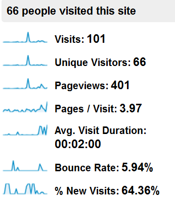
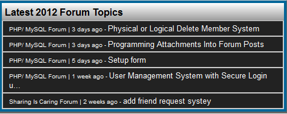

My learning journal week 3
There are many things I want to create for my website. For example if I wanted to create a forum there are tutorials out there for creating a forum like this one that use Mysql and PHP but for me as a site editor I look at my website every chance I get and see what other content I can add to it. Sometimes I just want to create a guestbook here's an example of a haunted attractions guestbook. With my team I contribute to what the team decides with this database plan, like somebody proposes to add activities to the page and I check the quality of that page and I can either give the thumbs up or the thumbs down depending on the content's quality.
My Learning Journal week 4
Right now I'm using trial-and-error to get my forum to work and here is my forum's home page which works perfectly. The only problems I have are signing up, signing in and creating a category. I mean I followed this tutorial to a tea and somehow when go to sign up for my own forum, I get this error: Same thing happens when I sign into my forum. But when I try to create a category, I get this error: . And I tried to change the code in the connect.php to point to localhost, but to no avail. Anyway, getting away from forum woes, when my team got together to go over the database plan I was looking over the mysql diagram on the screen and they constantly wanted to change it but I was almost tempted to go "just choose a plan and stick with it." But then I digress and go with the plan they chose but me as site editor I'm responsible for the quality of web site data that get stored in the database. For example when I write quality content for my podcast, and then I track it with Google Analytics, it shows me an overview of visitors that come to my site: . To get that quality podcast content out to the world I have a feed created by Feedburner. But to get quality multimedia content in the podcast out to the world I'll be using Powerpress and I host my video content on Posterous.
Learning Journal Week 5
For what I've learned this week I decided instead of building just a forum to build a communtiy and I found a guy who did just that very thing. His website has a custom search engine, some creative site navigation, a forum topics archive, just to name a few. What I've learned from this is that to connect to a database I need to know at least four things: my database host, my database username, my database password and the name of the database I'll be working with. But I also learned about the header function which can redirect the user to any place you want that user to go. In my free time I took the liberty to look at the features of Mysql community edition and I came across a connector for PHP to the mysql database known as the Mysql native driver for PHP which is included in version 5.4 of PHP you can read on this. It gives some advantages to actually using the library. Anyways getting away from what I learned I plan on taking what I've learned so far and using it to integrate my podcast blog into my entire site by building a community site.
Learning Journal Week 6
What I've learned this week is how to insert data captured from a registration form into a database. the code I'm about to show is an example of how I would insert date into a database: $sql = 'INSERT INTO account(first_name,last_name,username,password)VALUES(:first,:last,:username,:password)';. I also learned how to hash a password using one of three methods: md5 which is broken, sha1 which is still good, and crypt which includes these methods and more. Here's an example of how I hash my password: $salt = 'palt09re1pe3it5rmgc961'; // My salt
$saltedpassword = $salt.$password;
$password = sha1($saltedpassword); // creates a 40 character hash. I even learned how to use prepared statements when inserting data into a database. Here's an example of my prepared statement inside my sign me up function and what happens when said statement doesn't work: $stmt = $con->prepare($sql);
$stmt->bindvalue(':first',$firstname);
$stmt->bindvalue(':last', $lastname);
$stmt->bindvalue(':username', $username);
$stmt->bindvaule(':password', $password);
$success = $stmt->execute();
$rows = $stmt->rowCount();
$stmt->closeCursor();
return $rows;
} catch (PDOException $e){
header('location: /errordocs/500.php');
}.I just might take this and my prepared statement code and use it to register users to my community site